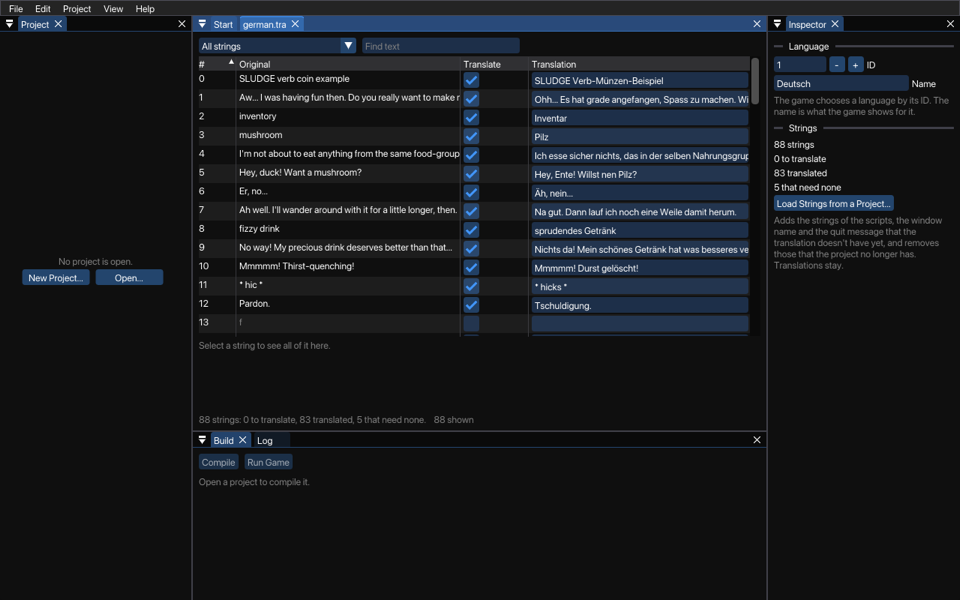

The translation editor of the Dev Kit helps you create translation data for SLUDGE games. You know, so you can play the same game in multiple languages without lots of rewriting of code. This is how it looks:

The translation editor has been specifically designed so that you don't need to understand the SLUDGE language in order to create a translation file. Neither do you need to be the author of the game being translated, neither do you need access to the source code. If you've written a SLUDGE game and want someone to create you a translation file, simply build them a file with all its strings still to translate and send it to them. If, on the other hand, you've been enlisted to create a translation file for someone else's game, skip straight to the editing section of this file.
Make a new translation with File > New > Translation, or open one (a .tra file). To import all the strings used in a SLUDGE project, click Load Strings in the Inspector: from the project that is open, or from another one that you choose. The Dev Kit scans through the project and pulls out all the strings that it contains: those of the scripts, the window title and the quit message. Any new strings that it finds will be added, as strings to translate, and strings that the project no longer has are removed. The translations that you have stay. A line under the table says what changed, and you can undo it.
Each string is in one of three kinds: to translate, translated, or needing no translation. Choose which strings the table shows in the list at the top: all of them, or those of one kind. To translate a string, type the translation in its field, and press Enter, which keeps it and goes on to the next string, or Escape, which leaves the string as it was. If the string doesn't require translating - for example, a file name or a string that looks like ABCDEFGHIJKLMNOPQRSTUVWXYZ0123456789@()*&# - then simply uncheck its Translate box. Under the table, you see the whole of the selected string and its translation. Every change can be undone with Edit > Undo.
Click the heading of a column to sort the strings by their number, original or translation.
Type text in the Find text box (Ctrl+F, or Command+F on macOS), and the table shows only the strings that contain it, in any case. The text is matched against the translations too. So, if you've translated "Hello" into "Bonjour" and "On the table" into "Sur la table", searching for "on" will match both (because of the translation of the first line, and the original text of the second).
The language ID and name are in the Inspector. The name will be viewed by the engine when it comes to selecting a language. The ID is used internally to distinguish between languages, so make sure that every language in your game has a unique ID.
Save the translation with File > Save, or under another name with File > Save As. Translations must be UTF-8 text; when the Dev Kit finds a file that isn't, it says on which line, and Project > Check Files converts it if it is part of the project.
Multiple Languages in a Single Game
SLUDGE and this SLUDGE documentation are copyright Hungry Software and contributors 2000-2012